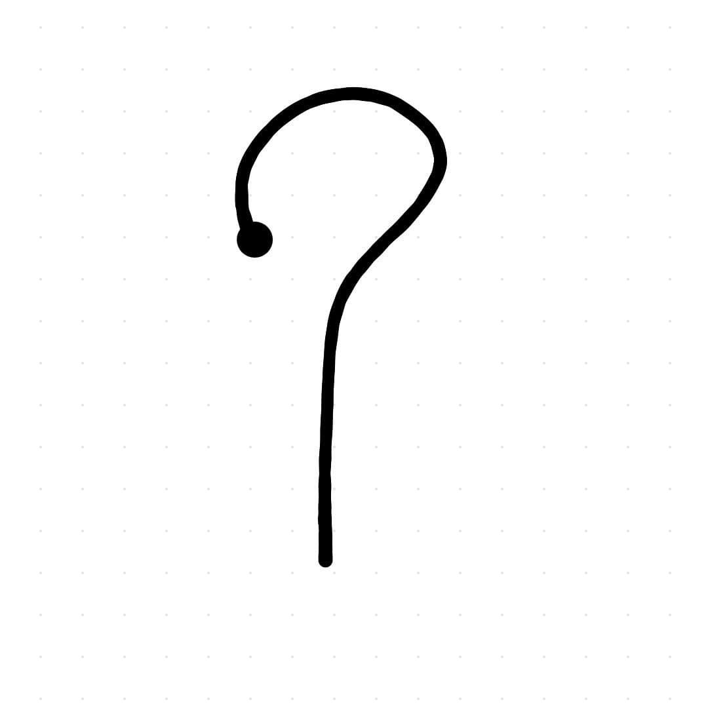

The PolyRec Recognizer is a unistroke gesture recognizer suitable for fast prototyping of gesture-based applications. The recognizer uses a nearest neighbor approach, and requires a small number of samples for each class.
The similarity between two gestures is calculated through a three steps procedure:
- firstly, each gesture is approximated to a polyline, in order to extract its main movements;
- then, the two polylines are aligned to obtain an equal number of segments from both of them;
- lastly, the distance is found by summing the contribution of each pair of segments.
This implementation, in JavaScript, for a thesis work, is a prototype developed for scientific purposes and web uses.
More technical details on PolyRec can be found in the following scientific paper here:
V Fuccella, G. Costagliola; Unistroke Gesture Recognition Through Polyline Approximation and Alignment; in Proceedings of CHI 2015; pp. 3351-3354
Useful Links
- Source code (minified) JavaScript: Here
- Source code (not minified) JavaScript: Here
- Source code (GitHub Repository): Java Here
- Gesture dataset logs XML: here (taken from the $1 Dataset)
- Paper PDF: here
This software is distributed under the New BSD License agreement.
DEMO
|
1. Arrow 2. Caret 3. Check 
4. Circle 5. Delete Mark 6. Left Curly Bracket 7. Right Curly Bracket 8. Left Square Bracket 9. Right Square Bracket 10. Pigtail

11. Question Mark 12. Rectangle 13. Star 14. Triangle 15. "V" 16. "X" |
Make strokes on this canvas. If a misrecognition occurs, add the misrecognized unistroke as an example of the intended gesture. |
References
- Costagliola, G., Fuccella, V., and Di Capua, M. Interpretation of strokes in radial menus: The case of the keyscretch text entry method. JVLC 24, 4 (2013), 234 – 247
- Douglas, D., and Peucker, T. Algorithms for the reduction of the number of points required to represent a digitized line or its caricature. The Canadian Cartographer 10, 2 (1973), 112–122.
- Fuccella, V., De Rosa, M., and Costagliola, G. Novice and expert performance of keyscretch: A gesture-based text entry method for touch-screens. IEEE THMS 44, 4 (2014), 511–523
- Li, Y. Protractor: A fast and accurate gesture recognizer. In Proc. of CHI ’10, ACM (2010), 2169–2172.
- Needleman, S. B., and Wunsch, C. D. A general method applicable to the search for similarities in the amino acid sequence of two proteins. Journal of Molecular Biology 48, 3 (1970), 443–453.
- Wobbrock, J. O., Wilson, A. D., and Li, Y. Gestures without libraries, toolkits or training: A $1 recognizer for user interface prototypes. In Proc. of UIST ’07, ACM (2007), 159–168.
Copyright © 2021 All rights reserved.
Last updated September, 2021.